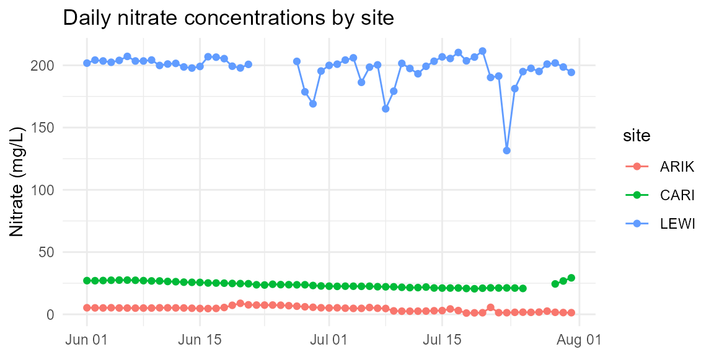

Overview
Rising river nitrate concentrations are becoming increasingly threatening to aquatic ecosystems. The nitrateApp package provides a clean dataset and interactive app to explore and visualise nitrate concentrations for three NEON sites between June - July 2019. This vignette demonstrates how to:
- Load and inspect the dataset
- Use simple functions to explore the data
- Run the interactive Shiny app
Loading the package and data
library(nitrateApp)
data("nitrates_small", package = "nitrateApp")
str(nitrates_small)
#> Classes 'tbl_df', 'tbl' and 'data.frame': 183 obs. of 3 variables:
#> $ site : chr "ARIK" "ARIK" "ARIK" "ARIK" ...
#> $ date : Date, format: "2019-06-01" "2019-06-02" ...
#> $ nitrate_mgL: num 5.3 5.2 5.15 5.32 5.13 ...The nitrates_small dataset is a small version of nitrate
concentration datasets available from NEON. These sites differ in
nitrate concentrations due to their individual geographic and aquatic
characteristics. These differences and other patterns can be further
explored using the nitrates_small dataset.
Helper examples to explore the dataset
Calculating some summary statistics
library(dplyr)
nitrates_small |>
group_by(site)|>
summarise(
mean_mgL = mean(nitrate_mgL, na.rm = TRUE),
min_mgL = min(nitrate_mgL, na.rm = TRUE),
max_mgL = max(nitrate_mgL, na.rm = TRUE)
)
#> # A tibble: 3 × 4
#> site mean_mgL min_mgL max_mgL
#> <chr> <dbl> <dbl> <dbl>
#> 1 ARIK 4.39 1.05 8.88
#> 2 CARI 23.9 20.5 29.3
#> 3 LEWI 197. 132. 211.Visualising the data
library(ggplot2)
ggplot(nitrates_small, aes(date, nitrate_mgL, color = site)) +
geom_line() +
geom_point() +
labs(x = NULL, y = "Nitrate (mg/L)", title = "Daily nitrate concentrations by site") +
theme_minimal()
Daily nitrate by site (June–July 2019)
Launch the interactive app
To explore the data interactively run:
nitrateApp::run_nitrate_app()With the app you can:
- Select one or more site(s)
- Select a date range
- View an updating time series for the selected date range and location